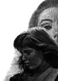

Helen à l'école...
En mai 1888, Helen fréquente l'Institut pour aveugles Perkins. En 1894, Helen Keller et Anne Sullivan déménagent à New York pour assister aux cours de l'école Wright-Humason pour les sourds enseignés par Sarah Fuller. En 1896, elles vont dans le Massachusetts ou Keller entre à l'école de Cambridge pour jeunes filles pour être ensuite admise, en 1900, au Radcliffe College.


Un de ses plus grands admirateurs, Mark Twain, l'avait présentée à Henry Huttleston Rogers, magnat de la Standard Oil, qui prit en charge ses frais de scolarité. En 1904, a 24 ans, elle est diplômée de Radcliffe.
Elle devient la première personne aveugle et sourde à obtenir diplôme universitaire. C'est à cette période qu'elle entretenait une correspondance avec le philosophe et pédagogue autrichien Wilhelm Jérusalem, l'un des premiers à découvrir son talent littéraire.
Une jeune femme confiante
Déterminée à communiquer avec les autres de la manière la plus classique possible, Helen a appris à parler, et a passé une grande partie de sa vie à donner des discours et des conférences.
“Ce sont les échecs bien supportés qui donnent le droit de réussir.”
Elle a appris à "entendre" le discours de gens en lisant sur leurs lèvres et avec ses mains son sens du toucher était devenu extrêmement subtile.A force, elle est devenue excellente dans l'utilisation du braille et dans l'utilisation de la langue des signes avec ses mains.
Peu de temps avant la Première Guerre mondiale, avec l'aide du Zoellner Quartet, elle a déterminé qu'en plaçant ses doigts sur une table elle pourrait percevoir une musique jouée à proximité.